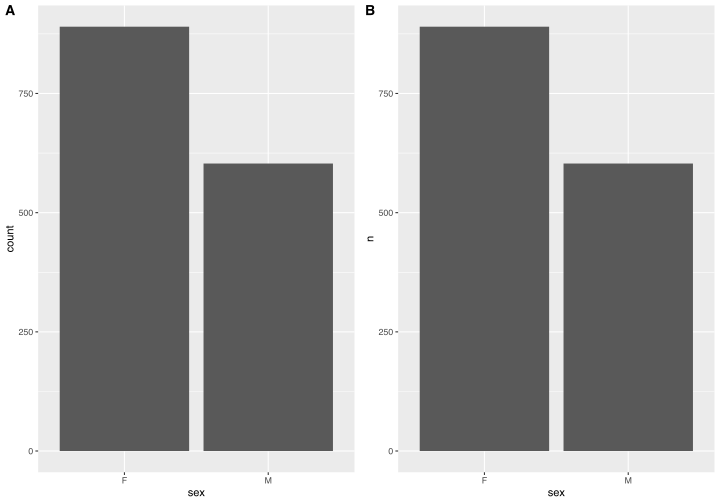

14 Plot our data with ggplot2
What is the best way to present data/results to someone? Of course, it’s through plots. You can have the best results in the world, you can have discovered the cure for the cancer, but without an efficient way to present your findings, you will not be able to share them.
So, here we are talking about ggplot2, which is one of the most used library for plotting in R (in my opinion, the best option to create plots, both in R and Python). Here is the official website of this magical library; it is part of the tidyverse and it has a lot of “extensions” (packages built up on ggplot that add functionalities, but let’s start with the basic).
To be honest, it would take an entire book to talk about ggplot2 (here an example); for this reason, here I will “just” show you what I think is enough to create wonderful graphs for transimitting experiment results. In next chapters I may use some functions and functionalities that are not covered in this one, but if you are interested and want to master in ggplot, I recommend: practice, explore and search on the internet!
Let‚Äôs now dive into the ocean of ggplot, starting by loading some data: we will use the same we used in previous chapters on tidyverse so you should be an expert on them üòÑ.
# 1. Load packages
suppressPackageStartupMessages(library(tidyverse))
library(ggplot2)
# 2. Load data
df <- read.csv("data/Supplementary_table_13.csv")
# 3. Change come column types
df <- df %>%
mutate("Diagnosis" = factor(Diagnosis, levels = c("Control", "AD")),
"sex" = factor(sex),
"Area" = factor(Area),
"dataset" = factor(dataset))
str(df)'data.frame': 1493 obs. of 10 variables:
$ SampleID : chr "1005_TCX" "1019_TCX" "1029_TCX" "1034_TCX" ...
$ Diagnosis: Factor w/ 2 levels "Control","AD": 2 2 2 2 2 2 2 2 2 2 ...
$ Braak : num 6 6 6 6 5 6 5.5 6 6 5 ...
$ sex : Factor w/ 2 levels "F","M": 1 1 1 1 1 1 1 1 1 1 ...
$ AOD : num 90 86 69 88 90 72 85 82 77 90 ...
$ PMI : num 8 4 4 5 NA 2 NA 15 NA NA ...
$ RIN : num 8.6 7.8 9.7 8.9 8.4 9 8 10 8.6 7.9 ...
$ CDR : num NA NA NA NA NA NA NA NA NA NA ...
$ Area : Factor w/ 6 levels "BM10","BM22",..: 6 6 6 6 6 6 6 6 6 6 ...
$ dataset : Factor w/ 3 levels "MAYO","MSBB",..: 1 1 1 1 1 1 1 1 1 1 ...Command structure
Data are loaded, we are ready! Here, it is important to know how we should structure the code to create a plot with ggplot. The cool thing about this package, is that code is structured in a very intuitive way (at least, I find it very intuitive): this is the “skeleton” of a ggplot code:
ggplot(data = <data>, mapping = aes(<misc>)) +
geom_<type>(mapping = aes(<misc>)) +
scale_<type>() +
labs() +
coord_<type> +
theme_<type> +
theme()This is just an example, with lots of placeholders (
You can see that each function is connected with the next one with a plus “+” sign, that’s because you can imagine the structure of this code as a chain of commands, whose order is not that important (only the first two lines of code must be in those positions). Each function define different aspects of the graph, and you can have multiple function of the same type in the same command.
Don’t worry, I know it sounds confusing, but by the end of the chapter you will understand everything.
Important: to create a basic plot, only the first two lines of code are needed, the other components have default or calculated values, so we can omit them.
ggplot(data = <data>) is the initiating function of the plot. It is fundamental and all ggplot codes must start with it. In this code, we can (usually we do) define which is the dataframe we will use to create the plot. In fact, the input of ggplot is a data.frame object.
Type of graph (geom_ and stat_)
Next, you have to decide which kind of graph you want to create, and you set it by choosing the corresponding geom_ function. For example, to create a lineplot you will use the geom_line function, to create a boxplot you will use the geom_boxplot function and so on. There are plenty of them and you can find the full list here; you will find yourself using mostly geom_bar (for barplots), geom_line, geom_boxplot, geom_histogram (for histograms), geom_density (for density plot), geom_text (for text) and geom_hline, geom_vline and geom_abline for horizontal, vertical and general lines.
Mapping values to graph elements (aes)
“Ok, I’m on it. But where I can set which values to plot?” I know this is what you want to ask me; and here is the answer: what to plot must be given in the form of aes function to mapping argument.
The basic elements of aes are x and y argument, where you define which variable should be plot on x axis and which one on y axis. Let’s make our first example of a plot by creating a dotplot to evaluate a possible correlation between AOD and PMI. Remember, a basic plot can be created just using ggplot() + geom_<type>()!
Cool! We have created our first graph using ggplot. As you can see, as we have passed a data.frame to data = and ggplot is part of tidyverse, we can use column name as variables in the code.
Now, we can create even a better code because each geom_ function has its own aesthetic properties that can be set. For example, we can change the size and the color of the dots in this plot: we can do by giving a value to all the points, or (and you will find this very cool), based on the values of another vector. What do I mean? Let’s see it together.
# 1. Create a plot with color and size set equal for all points
aod_pmi_all <- ggplot(data = df, mapping = aes(x = AOD, y = PMI)) +
geom_point(color = "#BD4F6C", size = 3)
# 2. Create a plot with color based on sex and size based on RIN
aod_pmi_sex_rin_aes <- ggplot(data = df, mapping = aes(x = AOD, y = PMI)) +
geom_point(mapping = aes(color = sex, size = RIN))
# 3. Arrange the plots together (we will see this in details soon)
suppressPackageStartupMessages(library(ggpubr))
aod_pmi_arr <- ggarrange(aod_pmi_all, aod_pmi_sex_rin_aes, ncol = 2, nrow = 1, align = "h", labels = "AUTO")
aod_pmi_arrLet’s focus on point 1 and 2 (the creation of the two plots):
-
In graph A, we set the color and the size of all the points inside
geom_pointfunction but NOT in mapping argument, as in graph B. The color code I give is an hex code for colors; if you don’t know what hex code means, check this. I used this tool to create palettes and choose colors. Try it! - When setting the mapping, you can think like “for EACH point, what characteristic should I map to it?” In this case, the color for each point is based on the value of sex column (factor) and the size on RIN (numeric). This can be useful to highlight differences based on different columns.
Change the “stat” associated to the graph
I have to introduce a more advance concept now: stat. Let’s first see an example, and then understand what stat are.
Let’s create a barplot that summarize the number of males and females in the data.frame:
“Hey, wait a minute! The data.frame contains multiple entries, you gave only one mapping (x). How does it summarize the values?” That’s stat, the way ggplot “operates” on the given data. Each geom_ function has its own default stat and sometimes you want to change it.
In this case, geom_bar has as defualt stat “count”, which means that for each x value, it counts the occurrence and plot the value. Other geom have “identity” as default transformation that associate an y value to each x value (as geom_point).
I’m telling you this, because sometimes you may find yourself in the situation where you have a data.frame with x and y values, and you want to create a barplot with them. Let’s see an example by recreating the same plot as before, but with a different approach:
# 1. Create a dataframe with the number of males and females
sex_df <- df %>%
group_by(sex) %>%
summarise(n = n())
# 2. Create the plot
sex_barplot <- ggplot(data = sex_df) +
geom_bar(mapping = aes(x = sex, y = n), stat = "identity")
sex_bar_arr <- ggarrange(males_females_barplot, sex_barplot, ncol = 2, nrow = 1, align = "h", labels = "AUTO")
sex_bar_arr
The two graphs are identical! This because changing the stat to “identity” in the second plot, allow us to plot dataframes that are already “summarized”. However, I suggest the first approach.
Multiple geometries in the same plot
We can use multiple geom_ on the same graph. For example, we can add two lines in the previous dotplot (AOD vs. PMI) representing “thresholds”. From a coding point of view, we could start again from the beginning, but it is easier to add the lines to the previous stored graph object:
# 1. Define thresholds as 10th quantile
aod_thresh <- quantile(df$AOD, probs = 0.1, na.rm = T)
pmi_thresh <- quantile(df$PMI, probs = 0.1, na.rm = T)
# 2. Add to graph
aod_pmi_sex_rin_aes <- aod_pmi_sex_rin_aes +
geom_hline(yintercept = pmi_thresh, color = "#FF0000", linetype = "dashed", size = 2.5) +
geom_vline(xintercept = aod_thresh, color = "#0000FF", linetype = "dotted", size = 3)
aod_pmi_sex_rin_aesWe have used geom_hline and geom_vline, giving the values of yintecept and xintercept respectively; we also set the color and the linetype (dashed and dotted).
We should have the lowest 10% of PMI values below the red line and the lowest 10% of AOD values on the left of the blue line.
Change axis and colors (scale_)
The previous graphs are ok, they show what we want but we didn’t set anything apart from the data to show and the type of graph.
Let’s now create a basic boxplot to investigate how RIN values changes based on the Area, and modify the axis ticks and setting the colors we want.
rin_area_boxplot <- ggplot(df) +
geom_boxplot(aes(x = Area, fill = Area, y = RIN), na.rm = T, outlier.shape = 2)
rin_area_boxplotLet’s now modify some aspects:
- The y axis spans from the lower value to the highest value (this is the default behaviour of ggplot). Let’s change the limits of this axis
- We want also the breaks of y axis to be even numbers (2, 4, 6, 8, 10)
- Colorscheme is ok, but let’s change it
All these things can be achieved usng different scale_<type> functions, in particular we will use scale_y_continuous to address the first two points and scale_fill_brewer for the last one. Can you guess which is the naming scheme of the scale_ functions?
Let me answer it: it starts with scale_, than what to change (y or fill in this case) and the type of data we have (continuous and brewer).
rin_area_boxplot_edit <- ggplot(df) +
geom_boxplot(aes(x = Area, fill = Area, y = RIN), na.rm = T, outlier.shape = 2) +
scale_y_continuous(limits = c(0, 10), breaks = seq(0, 10, 2)) +
scale_fill_brewer(palette = "Set1")
rin_area_boxplots_arr <- ggarrange(rin_area_boxplot, rin_area_boxplot_edit, ncol = 2, nrow = 1, align = "h", labels = "AUTO")
rin_area_boxplots_arrlimits = accepts a vector of two values, representing the lower and upper limits of the axis, breaks = accepts a vector of the values used to create the breaks.
Concerning fill colors, we used a function that accept the name of a palette from RColorbrewer. This is a valid approach, even if I prefer another one that is more project-safe (and I suggest using it):
- I create one .csv file for each categorical variable I want with a column corresponding to the levels and one to the color code (or linetype, or shape)
- I load this file and create a named vectors with colors as values and labels as names
-
I use
scale_<type>_manual(values = named_vector). This function use the given values and matching the labels.
This approach ensures that we use the same color/shape/linetype ecc for each label in a project and, most important, it is super easy to change something when we want: instead of change it in each code of the project, we change the value of the csv file and launch again all the scripts.
Let’s do it:
# 1. Load the file
color_df <- read.csv("refs/area_colors.csv")
# 2. Create a named vector
area_color_vector <- structure(color_df$Color, names = color_df$Area)
# 3. Create the plot
rin_area_boxplot_manual <- ggplot(df) +
geom_boxplot(aes(x = Area, fill = Area, y = RIN), na.rm = T, outlier.shape = 2) +
scale_y_continuous(limits = c(0, 10), breaks = seq(0, 10, 2)) +
scale_fill_manual(values = area_color_vector)
rin_area_boxplot_manual
This is the color file I used.
You can try different scales for different aspects of the plotting to create better plots; here I just show you an example, but I’m sure that we will encounter them in next chapters.
Add title and change labels (labs)
To make out plots easier to understand, we can set a title, a subtitle and change the labels of the axes through labs() function. Let’s see it:
rin_area_boxplot_manual <- rin_area_boxplot_manual +
labs(title = "RIN distribution across areas",
subtitle = "TL samples have higher RIN values compared to the others",
x = "",
caption = "2023 R for biologist",
tag = "ggplot2")
rin_area_boxplot_manualLook, now it is much more detailed and professional. But still, we can improve it. How? with theme_ functions.
Change appearence (theme)
Through theme_ functions we can change the aspect of the axes, title, subtitle, legend, and so on… I know you have familiarity with PowerPoint, so let’s imagine them as “Picture Format” menu.
We have a set of pre-built themes, on top of which we can set our own settings. Let’s start woth a pre-built theme, because I love ggplot but I hate the background of the previous plot; I prefere using theme_classic for my plots, with little adjustments.
Wow, now the background is gone and we have a cleaner plot üòç. This is a good starting point; let‚Äôs now remove the legend, as it is not adding any information, and highlight the title.
rin_area_boxplot_manual <- rin_area_boxplot_manual +
theme(legend.position = "none",
plot.title = element_text(face = "bold", size = 14, hjust = 0.5))
rin_area_boxplot_manualPerfect! Now the title is bigger and in bold, and we do not have the legened anymore. LEt’s discuss about how we change the title: in ggplot, all the text elements of a plot (title, axis title, axis labels, etc) are controlled through element_text funtion, while all the line elements (axes, grid, axis ticks, etc) are controlled through element_line funtion. The argument of these functions are straightforward and super intuitive, there is no need to explain them now, you can explore yourself!
Save plot
Now that we have created our plot, it’s time to save it! ggplot comes with its own function to save plots: ggsave. Here is how to use it:
ggsave(filename = "example.pdf",
plot = rin_area_boxplot_manual,
device = "pdf",
width = 14,
height = 14,
units = "cm")The argument are self-explanatory here, so you should not have any issue in saving all of you plots.
Suggestion: play with dimensions in theme_ and ggsave functions to optimize your plot. Moreover, saving the file as pdf or svg let’s you easilly modify it with Gimp or Photoshop/Illustrator, scaling them without losing any resolution.
Here we are at the end of this introduction of ggplot2. As I told you at the beginning, it would take an entire book to explain every byte of code for plotting; in this chapter, I gave you an introduction and suggest you to play and explore this magical world. However, dedicated chapters will come for each type of graph, but now it’s time to talk about statistical analyses. ’cause, yes… plotting is good, but at the end of the day, they are a way to transmit what you found in your experiments and the significance associated to it.
More detailed in the future